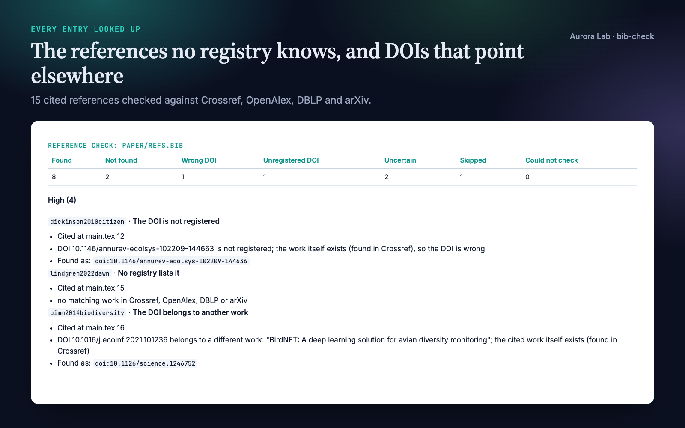
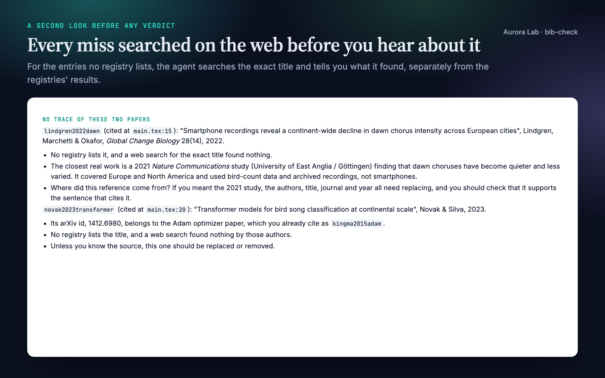
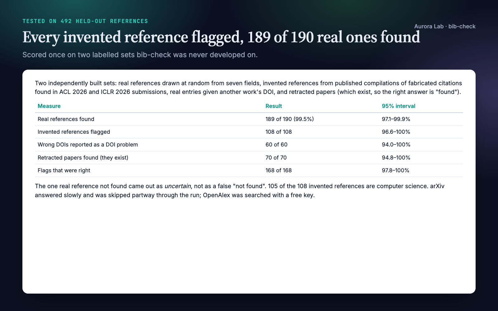
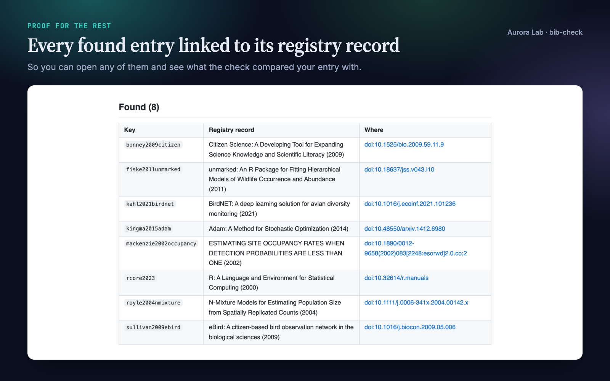
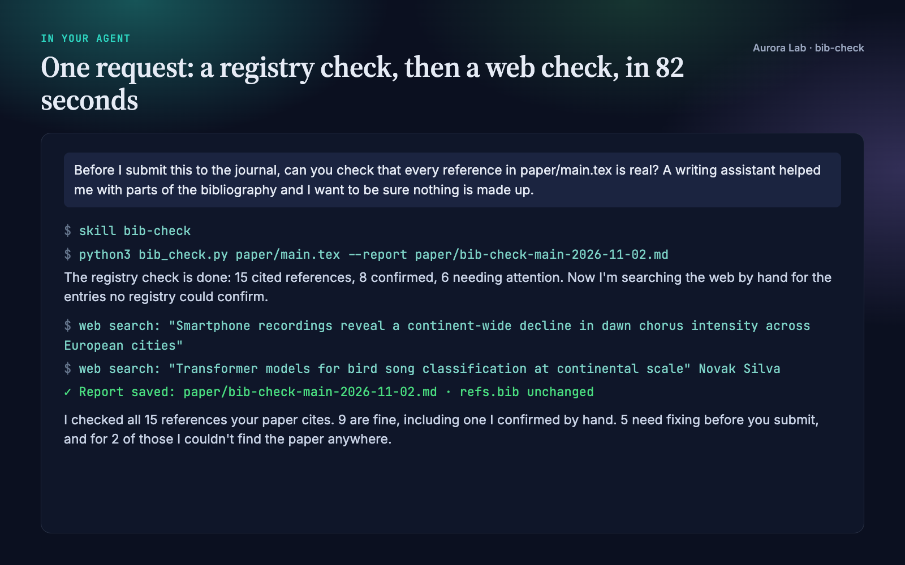

Overview
An invented reference looks exactly like a real one: plausible authors, a fitting title, a real journal. They now turn up in submitted papers, theses and student work, often after an AI tool helped with the bibliography, and journals and preprint servers have started rejecting papers for them. bib-check finds them by asking the registries that index scholarly work.
- Every entry looked up. DOIs are resolved (Crossref, then doi.org for DataCite and other agencies), arXiv and PubMed identifiers are checked, and the rest are searched by title in Crossref, OpenAlex, DBLP and arXiv, stopping at the first registry that lists the work.
- Problems named precisely. References no registry lists, DOIs that are not registered, DOIs that belong to a different paper (with that paper's title), arXiv identifiers that belong to another paper, and real titles cited with other authors.
- Your paper, not just your .bib. Given a LaTeX paper it follows
\input, finds the bibliography files and checks only the keys you cite, and the report says where each problem entry is cited (file:line). - A second look before any verdict. For every entry the registries could not confirm, your agent searches the exact title on the web and tells you whether it exists elsewhere (a book, a thesis, a very new paper), resembles a different real work, or has no trace at all.
- Careful wording, your files untouched. "No registry lists it", never "fake". The
.bibis only changed if you ask, and then only with fixes a registry record supports.
Quick start
- Get the skill from Agensi (free) and add it to your agent (Claude Code, Codex CLI, Cursor, Gemini CLI or any agent that loads SKILL.md skills).
- Nothing to install. The check is one Python script that uses only the standard library (Python 3.10 or newer). It needs internet access to the registries listed below.
- Ask in plain words, naming the paper or the bibliography.
Example requests:
- "Check the references in paper/main.tex before I submit."
- "Are all the entries in refs.bib real? An AI tool helped me write some of them."
- "A student sent me this reference list (pasted below). Which of these can't be found?"
Want to see a report first? The skill ships a seeded bibliography and the report a real run wrote on it: examples/sample-refs.bib and examples/sample-report.md.
What you get
These come from a real run: a fresh agent session with only this skill installed, given a synthetic 15-reference LaTeX paper on citizen-science bird monitoring with five planted problems (an invented paper, an invented preprint carrying another paper's arXiv id, a real title with invented authors, a DOI copied from another entry and a DOI with two digits swapped) and the request shown in the last image. The run took 82 seconds and found all five. The report images come from the file it saved; the second image is from the agent's answer.





How well it works
We scored bib-check once on 492 labelled references it was never developed on: two independently built sets of 246. The real references were drawn at random from seven fields (journal articles, books, conference papers without a DOI, arXiv-only preprints), written in the messy forms real .bib files use. The invented ones come from two published compilations of fabricated citations found in real conference submissions: HalluCitation (ACL 2026) and the CiteTracer set from ICLR 2026 desk rejections. Wrong-DOI items are real entries given another work's DOI, and the retracted papers come from the Retraction Watch data; they exist, so the right answer for them is "found".
| Measure | Result | 95% interval |
|---|---|---|
| Real references found | 189 of 190 (99.5%) | 97.1–99.9% |
| Invented references flagged | 108 of 108 | 96.6–100% |
| Wrong DOIs reported as a DOI problem | 60 of 60 | 94.0–100% |
| Retracted papers found (they exist) | 70 of 70 | 94.8–100% |
| Flags that were right (precision) | 168 of 168 | 97.8–100% |
- The one real reference it did not find, a physics paper whose title is written with LaTeX dashes ("Li--He collisions"), came out as uncertain, not as a false "not found".
- 105 of the 108 invented references are from computer science, where the compilations come from; the flag rate is best established there.
- During the run arXiv answered slowly and was skipped partway through, as can happen to you; OpenAlex was searched with a free key. Intervals are Wilson 95% intervals. The run was made once, on 2 November 2026, and the rules were not changed afterwards.
How it works
- Inputs. The main
.texfile (its\inputfiles and bibliographies come along, and only cited keys are checked), one or more.bibfiles, or a reference list in another format, which the agent first writes into a temporary BibTeX file exactly as printed. - Identifiers first. A DOI is resolved and the record's title and authors compared with the entry. arXiv and PubMed identifiers are looked up the same way.
- Then a title search in Crossref, OpenAlex, DBLP and arXiv, in that order, stopping at the first registry that lists the work. A match needs a near-identical title (typos, punctuation, LaTeX and a dropped subtitle are tolerated) and the same authors, or the same year when the entry has no authors.
- The agent's check. Entries no registry lists, and close matches with other authors, are searched on the web by exact title; the agent reports what it found, separately from the registries' results.
- The report. A Markdown file with the counts, the entries that need attention by severity (with where each is cited, what the registries said and links to the closest records), every found entry with a link to its record, the skipped entries and why, and which registries were asked.
What the results mean
| Result | Meaning | Severity |
|---|---|---|
| found | A registry lists a work with this title and these authors (or this year, when there are no authors). | ok |
| not found | No registry lists a matching work. Strong evidence for journal and conference papers; weak for books, reports and theses. | high for papers, low otherwise |
| wrong DOI | The DOI is registered, but to a different work; its title is shown. | high |
| unregistered DOI | No registration agency knows the DOI. | high |
| uncertain | A close title with different authors, or a near but different title. | medium |
| skipped | Web pages, software and code releases without a DOI, which registries do not index. | ok |
| could not check | No registry could be reached for the entry. | medium |
Files it reads and writes
| File | Read or written |
|---|---|
The .tex or .bib you point to |
Read. A .tex file brings in its \input files and the bibliographies it names. |
research/paper/, research/refs.bib |
Read, when you name no file and the project has a research/ folder. |
research/reviews/bib-check-<name>-<date>.md |
Written: the report. Without a research/ folder it goes next to your file. |
| A JSON file | Written only if you ask for machine-readable results. |
It never changes your .bib or paper unless you ask.
Network and privacy
For each entry the script sends the title, the first author's family name, the year and any DOI, arXiv or PubMed identifier, never your paper's text, to these services:
| Service | Used for |
|---|---|
api.crossref.org |
DOI lookups and bibliographic search |
doi.org |
DOIs registered with other agencies (DataCite: arXiv, Zenodo...) |
export.arxiv.org |
arXiv identifiers and title search, one request every three seconds as arXiv asks |
eutils.ncbi.nlm.nih.gov |
PubMed identifiers |
api.openalex.org |
Title search. Without a key it shares a small free daily budget with your network; a free key (OPENALEX_API_KEY) gives you your own. |
sparql.dblp.org |
DBLP's query service, for computer-science papers without a DOI |
A service that stops answering is skipped for the rest of the run and named in the report. Set BIB_CHECK_MAILTO to your email if you want Crossref's and PubMed's polite pools; nothing is sent otherwise.
The research/ folder
bib-check works on its own. If you keep your project in a research/ folder, it uses the same plain-file convention as the other Aurora Lab research skills:
research/
paper/ manuscript sections (read)
refs.bib bibliography (read)
reviews/ reports (written)
FAQ
Which agents does it work with?
Any agent that loads SKILL.md skills and can run Python, including Claude Code, Codex CLI, Cursor and Gemini CLI. Web search in the agent is optional: with it, the agent double-checks the entries the registries could not confirm.
Does it say a reference is fake?
No. It says what it can know: no registry lists the work, or the DOI points elsewhere. The agent's web search then tells you whether the work exists outside the registries. Whether an entry was invented, garbled or simply obscure is for you to judge, and when you check someone else's paper the report describes references, not people.
Will it fix my bibliography?
Only if you ask, and only with what a registry record supports: a wrong or unregistered DOI can be replaced with the DOI of the record the work was found as, and the agent shows each change first. It never invents a DOI or swaps an entry for a different paper without your confirmation.
My reference list is in Word, not BibTeX. Can it check it?
Yes. The agent writes each reference into a temporary BibTeX file exactly as printed, without correcting anything, and runs the same check. The temporary file is deleted afterwards.
How long does it take?
About a second per entry; entries that need arXiv take longer because arXiv allows one request every three seconds. In our demo, 15 references plus the agent's web checks took 82 seconds.
Do I need the other Aurora Lab skills?
No. It pairs well with claim-check (every result in the text backed by its data) and journal-house-style (a venue's author guidelines) before a submission, but it works on its own and never calls another skill.
Limitations
- Existence and DOIs only. An entry can be found and still have the wrong year, pages, volume, venue or part of the author list; bib-check does not compare those fields, look for retractions, or read the cited works.
- Registries cover journal articles, conference papers and preprints well, and books, theses, standards, patents, reports and web pages poorly. "Not found" for those is a weak signal, which is why it is reported at low severity and double-checked on the web.
- A badly garbled title can show as not found or uncertain even when the work exists.
- OpenAlex without a key shares a small daily budget per network, and a registry that stops answering is skipped for the run; the report says when that happened, and a rerun later fills the gap.
- Tested on English-language bibliographies.
Changelog
1.0.0 · November 2026 · First release.